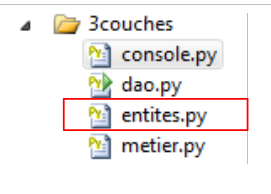
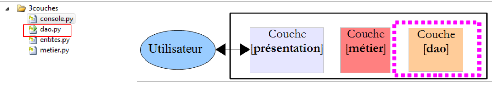

7. Architecture en couches et programmation par interfaces
7.1. Introduction
Nous nous proposons d'écrire une application permettant l'affichage des notes des élèves d'un collège. Cette application aura une architecture multi-couches :
 |
- la couche [présentation] est la couche en contact avec l'utilisateur de l'application.
- la couche [metier] implémente les règles de gestion de l'application, tels que le calcul d'un salaire ou d'une facture. Cette couche utilise des données provenant de l'utilisateur via la couche [présentation] et du SGBD via la couche [dao].
- la couche [dao] (Data Access Objects) gère l'accès aux données du SGBD.
Nous allons illustrer cette architecture avec une application console simple :
- il n'y aura pas de base de données,
- la couche [dao] gèrera des entités Eleve, Classe, Matiere, Note permettant de gérer les notes des élèves,
- la couche [métier] permettra de calculer des indicateurs sur les notes d'un élève précis,
- la couche [présentation] sera une application console qui affichera les résultats calculés par la couche [métier].
Le projet Visual Studio de l'application est le suivant :
 |
7.2. Les entités de l'application
Les entités sont des objets. Nous aurons ici quatre classes pour chacune des entités Eleve, Classe, Matiere, Note.
 |
Le fichier [entites.py] regroupe quatre classes.
La classe [Classe] représente une classe du collège :
class Classe:
# constructeur
def __init__(self,id,nom):
# on mémorise les paramètres
self.id=id
self.nom=nom
# toString
def __str__(self):
return "Classe[{0},{1}]".format(self.id,self.nom)
- lignes 3-6 : une classe est définie par un n° id (ligne 5) et un nom (ligne 6) ;
- lignes 9-10 : la méthode d'affichage de la classe.
La classe [Matiere] est la suivante :
class Matiere:
# constructeur
def __init__(self,id,nom,coefficient):
# on mémorise les paramètres
self.id=id
self.nom=nom
self.coefficient=coefficient
# toString
def __str__(self):
return "Matiere[{0},{1},{2}]".format(self.id,self.nom,self.coefficient)
- lignes 3-7 : une matière est définie par son n° (ligne 5), son nom (ligne 6), son coefficient (ligne 7) ;
- lignes 10-11 : la méthode d'affichage de la matière.
La classe [Eleve] est la suivante :
class Eleve:
# constructeur
def __init__(self,id,nom,prenom,classe):
# on mémorise les paramètres
self.id=id
self.nom=nom
self.prenom=prenom
self.classe=classe
# toString
def __str__(self):
return "Eleve[{0},{1},{2},{3}]".format(self.id,self.prenom,self.nom,self.classe)
- lignes 3-8 : un élève est caractérisé par son n° (ligne 5), son nom (ligne 6), son prénom (ligne 7), sa classe (ligne 8). Ce dernier paramètre est une référence sur un objet [Classe] ;
- lignes 11-12 : la méthode d'affichage de l'élève.
La classe [Note] est la suivante :
class Note:
# constructeur
def __init__(self,id,valeur,eleve,matiere):
# on mémorise les paramètres
self.id=id
self.valeur=valeur
self.eleve=eleve
self.matiere=matiere
# toString
def __str__(self):
return "Note[{0},{1},{2},{3}]".format(self.id,self.valeur,self.eleve,self.matiere)
- lignes 3-8 : un objet [Note] est caractérisé par son n° (ligne 5), la valeur de la note (ligne 6), une référence sur l'élève qui a cette note (ligne 7), une référence sur la matière objet de la note (ligne 8) ;
- lignes 11-12 : la méthode d'affichage de l'objet [Note].
7.3. La couche [dao]
 |
La couche [dao] offrira l'interface suivante à la couche [métier] :
- getClasses rend la liste des classes du collège ;
- getMatieres rend la liste des matières ;
- getEleves rend la liste des élèves ;
- getNotes rend la liste des notes.
La couche [métier] n'utilisera que ces méthodes. Elle n'a pas à savoir comment elles sont implémentées. Ces données peuvent alors provenir de différentes sources (en dur, d'une base de données, de fichiers texte, ...) sans que cela impacte la couche [métier]. On appelle cela la programmation par interfaces.
La classe [Dao] implémente cette interface de la façon suivante :
# -*- coding=utf-8 -*-
# import du module des entités
from entites import *
class Dao:
# constructeur
def __init__(self):
# on instancie les classes
classe1=Classe(1,"classe1")
classe2=Classe(2,"classe2")
self.classes=[classe1,classe2]
# les matières
matiere1=Matiere(1,"matiere1",1)
matiere2=Matiere(2,"matiere2",2)
self.matieres=[matiere1,matiere2]
# les élèves
eleve11=Eleve(11,"nom1","prenom1",classe1)
eleve21=Eleve(21,"nom2","prenom2",classe1)
eleve32=Eleve(32,"nom3","prenom3",classe2)
eleve42=Eleve(42,"nom4","prenom4",classe2)
self.eleves=[eleve11,eleve21,eleve32,eleve42]
# les notes
note1=Note(1,10,eleve11,matiere1)
note2=Note(2,12,eleve21,matiere1)
note3=Note(3,14,eleve32,matiere1)
note4=Note(4,16,eleve42,matiere1)
note5=Note(5,6,eleve11,matiere2)
note6=Note(6,8,eleve21,matiere2)
note7=Note(7,10,eleve32,matiere2)
note8=Note(8,12,eleve42,matiere2)
self.notes=[note1,note2,note3,note4,note5,note6,note7,note8]
#-----------
# interface
#-----------
# liste des classes
def getClasses(self):
return self.classes
# liste des matières
def getMatieres(self):
return self.matieres
# liste des élèves
def getEleves(self):
return self.eleves
# liste des notes
def getNotes(self):
return self.notes
- ligne 4 : on importe le module qui contient les entités manipulées par la couche [dao] ;
- ligne 8 : le constructeur n'a pas de paramètres. Il construit en dur quatre listes :
- lignes 10-12 : la liste des classes ;
- lignes 14-16 : la liste des matières ;
- lignes 18-22 : la liste des élèves ;
- lignes 24-32 : la liste des notes.
- lignes 39-52 : les quatre méthodes de l'interface de la couche [dao] se contentent de rendre une référence sur les quatre listes construites par le constructeur.
Un programme de test pourrait être le suivant :
# -*- coding=utf-8 -*-
# import du module des entités et de la couche [dao]
from entites import *
from dao import *
# instanciation couche [dao]
dao=Dao()
# liste des classes
for classe in dao.getClasses():
print classe
# liste des classes
for matiere in dao.getMatieres():
print matiere
# liste des classes
for eleve in dao.getEleves():
print eleve
# liste des classes
for note in dao.getNotes():
print note
Les commentaires se suffisent à eux-mêmes. Les lignes 11-24 utilisent l'interface de la couche [dao]. Il n'y a pas là d'hypothèses sur l'implémentation réelle de la couche. Ligne 8, on instancie la couche [dao]. Ici on fait des hypothèses : nom de la classe et type de constructeur. Il existe des solutions qui permettent d'éviter cette dépendance.
Les résultats de l'exécution de ce script sont les suivants :
7.4. La couche [métier]
 |
La couche [métier] implémente l'interface suivante :
- getClasses rend la liste des classes du collège ;
- getMatieres rend la liste des matières ;
- getEleves rend la liste des élèves ;
- getNotes rend la liste des notes ;
- getStatsForEleve rend les notes de l'élève n° idEleve ainsi que des informations sur celles-ci : moyenne pondérée, note la plus basse, note la plus haute.
La couche [présentation] n'utilisera que ces méthodes. Elle n'a pas à savoir comment elles sont implémentées.
La méthode getStatsForEleve rend un objet de type [StatsForEleve] suivant :
class StatsForEleve:
# constructeur
def __init__(self, eleve, notes):
# on mémorise les paramètres
self.eleve=eleve
self.notes=notes
# on s'arrête s'il n'y a pas de notes
if len(notes)==0:
return
# exploitation des notes
sommePonderee=0
sommeCoeff=0
self.max=-1
self.min=21
for note in notes:
valeur=note.valeur
coeff=note.matiere.coefficient
sommeCoeff+=coeff
sommePonderee+=valeur*coeff
if valeur<self.min:
self.min=valeur
if valeur>self.max:
self.max=valeur
# calcul de la moyenne de l'élève
self.moyennePonderee=float(sommePonderee)/sommeCoeff
# toString
def __str__(self):
# cas de l'élève sans notes
if len(self.notes)==0:
return "Eleve={0}, notes=[]".format(self.eleve)
# cas de l'élève avec notes
str=""
for note in self.notes:
str+="{0} ".format(note.valeur)
return "Eleve={0}, notes=[{1}], max={2}, min={3}, moyenne={4}".format(self.eleve, str, self.max, self.min, self.moyennePonderee)
- ligne 3 : le constructeur reçoit deux paramètres :
- une référence sur l'élève de type [Eleve] pour lequel on calcule des indicateurs ;
- une référence sur ses notes, une liste d'objets [Note].
- lignes 8-9 : si la liste des notes est vide, on ne va pas plus loin.
- sinon lignes 11-25, on calcule les indicateurs suivants :
- self.moyennePonderee : la moyenne de l'élève pondérée par les coefficients des matières ;
- self.min : la note la plus faible de l'élève ;
- self.max : sa note la plus haute.
- ligne 28 : la méthode d'affichage de la classe sous la forme indiquée ligne 36.
Un script de test de cette classe pourrait être le suivant :
# -*- coding=utf-8 -*-
# import des modules des entités, de la couche [dao] et de la couche [metier]
from entites import *
from dao import *
from metier import *
# une classe
classe1=Classe(1,"6e A")
# un élève dans cette classe
paul_durand=Eleve(1,"durand","paul",classe1)
# trois matières
maths=Matiere(1,"maths",1)
francais=Matiere(2,"francais",2)
anglais=Matiere(3,"anglais",3)
# des notes dans ces matières pour l'élève
note_maths=Note(1,10,paul_durand,maths)
note_francais=Note(2,12,paul_durand,francais)
note_anglais=Note(3,14,paul_durand,anglais)
# on affiche les indicateurs
print StatsForEleve(paul_durand,[note_maths, note_francais,note_anglais])
Les résultats écran sont les suivants :
Revenons à notre architecture en couches :
 |
La classe [Metier] implémente la couche [métier] de la façon suivante :
class Metier:
# constructeur
def __init__(self,dao):
# on mémorise la référence sur la couche [dao]
self.dao=dao
#-----------
# interface
#-----------
# les indicateurs sur les notes
def getStatsForEleve(self,idEleve):
# Stats pour l'élève de n° idEleve
# recherche de l'élève
trouve=False
i=0
eleves=self.getEleves()
while not trouve and i<len(eleves):
trouve=eleves[i].id==idEleve
i+=1
# a-t-on trouvé ?
if not trouve:
raise RuntimeError("L'eleve [{0}] n'existe pas".format(idEleve))
else:
eleve=eleves[i-1]
# liste de toutes les notes
notes=[]
for note in self.getNotes():
# on ajoute à notes, toutes les notes de l'élève
if note.eleve.id==idEleve:
notes.append(note)
# on rend le résultat
return StatsForEleve(eleve,notes)
# la liste des classes
def getClasses(self):
return self.dao.getClasses()
# la liste des matières
def getMatieres(self):
return self.dao.getMatieres()
# la liste des élèves
def getEleves(self):
return self.dao.getEleves()
# la liste des notes
def getNotes(self):
return self.dao.getNotes()
- lignes 3-5 : le constructeur reçoit une référence sur la couche [dao]. La couche [métier] doit avoir cette référence. Ici, on la lui donne via son constructeur. On pourrait imaginer d'autres solutions. Dans une architecture en couches représentée horizontalement, chaque couche doit avoir une référence sur la couche qui est à sa droite ;
- lignes 36-49 : les méthodes getClasses, getMatieres, getEleves, getNotes se contentent de déléguer l'appel aux méthodes de mêmes noms de la couche [dao] ;
- ligne 12 : la méthode getStatsForEleve reçoit comme paramètre le n° de l'élève pour lequel on doit rendre des indicateurs.
- ligne 17 : l'élève va être recherché dans la liste de tous les élèves ;
- lignes 18-20 : la boucle de recherche ;
- ligne 23 : si l'élève n'a pas été trouvé, on lève une exception ;
- sinon ligne 25, l'élève trouvé est mémorisé ;
- lignes 28-31 : on cherche parmi l'ensemble des notes du collège, celles qui appartiennent à l'élève mémorisé ;
- lorsqu'on les a trouvées, on peut construire l'objet StatsForEleve demandé.
7.5. La couche [console]
 |
La couche [console] est implémentée par le script suivant :
# -*- coding=utf-8 -*-
# import du module des entités, du module [dao], du module [metier]
from entites import *
from dao import *
from metier import *
# ----------- couche [console]
# instanciation couche [metier]
metier=Metier(Dao())
# demande /réponse
fini=False
while not fini:
# question
print "numero de l'eleve (>=1 et * pour arreter) : "
# reponse
reponse=raw_input()
# fini ?
if reponse.strip()=="*":
break
# a-t-on une saisie correcte ?
ok=False
try:
idEleve=int(reponse,10)
ok=idEleve>=1
except:
pass
# donnée correcte ?
if not ok:
print "Saisie incorrecte. Recommencez..."
continue
# calcul
try:
print metier.getStatsForEleve(idEleve)
except RuntimeError,erreur:
print "L'erreur suivante s'est produite : {0}".format(erreur)
- ligne 10 : instanciation à la fois des couches [dao] et [métier]. c'est la seule dépendance de notre code vis à vis de l'implémentation de ces couches ;
- ligne 34 : on utilise l'interface de la couche [métier] ;
- ligne 19 : la méthode strip supprime les espaces de début et fin de chaîne ;
- ligne 20 : break permet de sortir d'une boucle ;
- ligne 24 : on tente de convertir la chaîne saisie en entier décimal ;
- ligne 29 : ok est vrai seulement si on est passé par la ligne 25 ;
- ligne 31 : continue permet de reboucler en milieu de boucle ;
- ligne 34 : calcul des indicateurs ;
- ligne 35 : on intercepte l'exception RuntimeError qui peut sortir de la couche [métier].
Voici un exemple d'exécution :